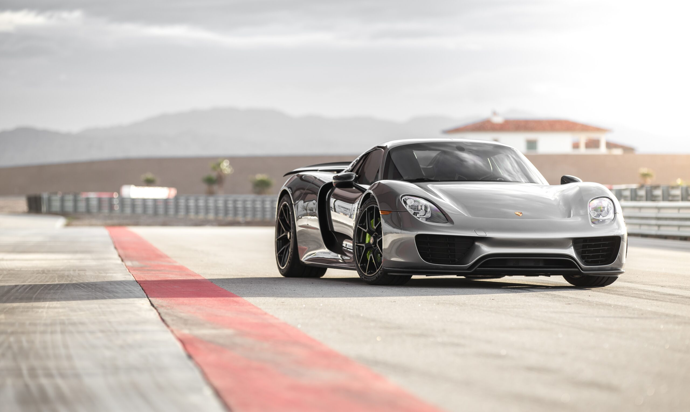
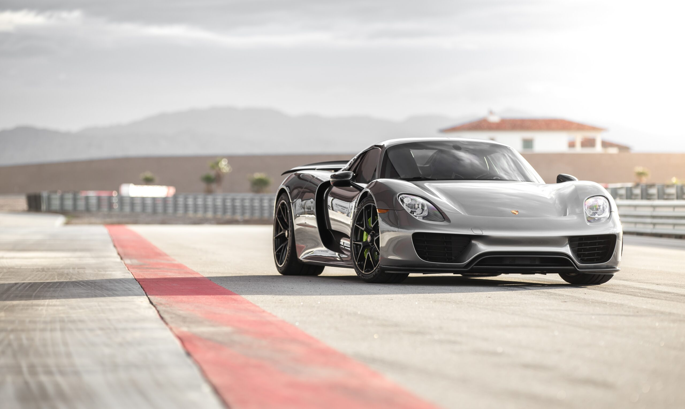
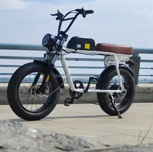

Acceuil
Voitures
Catégories
Contact
By carsport
l’Experience Extraoridinaire
Notre journaliste Jean-Pierre Gagick essaie le tout dernier modèle de Porsche : la 911 S/T. Et pour trouver l’origine du nom "S/T", il faut remonter à la création originelle de 1969. À cette époque, le constructeur souhaite créer une version allégée de la 911 S pour la compétition. Face à ce succès inattendu, Porsche prend donc la décision de créer son modèle homologué pour la route.

Dernière Collection


 

laisser vous tenter par un univers de vitesse pur
 ç
ç
Boutique

Vestes
Issue de la collection Baron, la montre 219G164 brille par son originalité et sa couleur.

Montres
La veste de course, souvent appelée "Racing Jacket", est une pièce de mode audacieuse et dynamique.
e-bikes
La gamme E-Motion met l’accent sur le consommateur qui est sensible aux prix mais qui privilégie quand même des produits de qualités.

Chaises de bureau
En tissu respirant et dispose d’un support lombaire rembourré réglable en hauteur et profondeur, une caractéristique essentielle.
La vitesse n’a plus de limite
Moteur 6 cylindres à plat atmosphérique de 525 chevaux.